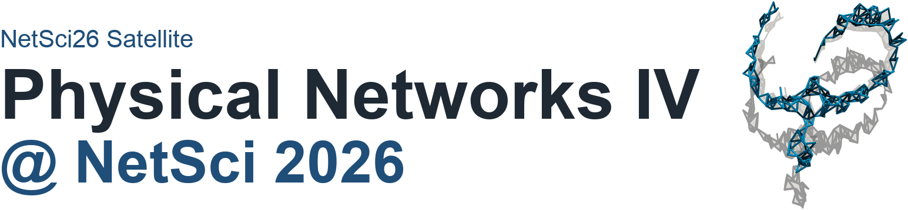

Detailed program
- 1 Department of Mathematics, University of California, Los Angeles, CA, USA
- 2 Santa Fe Institute, Santa Fe, NM, USA
Abstract
Natural materials are often disordered, and their bulk properties are difficult to predict from their structure. In this talk, I will discuss work on the design and analysis of 3D-printed “disordered metamaterials”, which have tunable amounts of disorder. I will discuss our collaboration’s pipeline from point clouds of different types to networks using a variety of constructions, and then to 3D-printed metamaterials. I will discuss the impact of point-cloud structure, especially on the amount and magnitude of hyperuniformity, on the local geometric and transport properties of the networks that we create with them. I will also bring physical samples of disordered metamaterials with me to show.
- 1 Department of Mathematics, Massachusetts Institute of Technology, Cambridge, MA, USA
Abstract
Complex disordered matter is central to a wide range of disciplines, from bacterial colonies and embryonic tissues in biology to foams and granular media in materials science and stellar configurations in astrophysics. Because of the vast differences in composition and scale, comparing structural features across such disparate systems remains challenging. Here, using the statistical properties of Delaunay tessellations, we present a mathematical framework for quantifying topological distances between two- and three-dimensional point clouds. The resulting system-agnostic metric reveals subtle structural differences among bacterial biofilms and between zebrafish brain regions, and it recovers the temporal ordering of embryonic development. We apply this metric to construct a universal topological atlas spanning bacterial biofilms, snowflake yeast, plant shoots, zebrafish brain tissue, organoids, embryonic tissues, foams, colloidal packings, glassy materials, and stellar configurations.
- 1 Network Science and Technology Center, Rensselaer Polytechnic Institute, Troy, NY, USA
- 2 Department of Physics, Applied Physics, and Astronomy, Rensselaer Polytechnic Institute, Troy, NY, USA
Abstract
The brain’s connectome and the vascular system are examples of physical networks: tangible, web-like objects that exist in real space. This physical reality means these networks combine a graph structure, describing their topological connectivity, with a physical structure, capturing the shape of all nodes and links. How do we best describe this physical structure? We can naturally model it as a geometric object, specifically, a manifold constructed in 3D space. To do this, we turn to an unexpected mathematical tool: the framework of covariant closed string field theory, developed in the 1980s. This framework provides an exact correspondence between network-like graphs and smooth surfaces. Using this string-theoretic interpretation, we show that geometric objects acquire network-like shapes precisely because they tend to minimize their surface area. By developing both a Riemann surface formulation and a numerical algorithm to simulate this minimization process, we find that it predicts structural features that challenge traditional models of network formation. Specifically, this minimization predicts the emergence of trifurcations and branching angles that, while defying conventional models such as Steiner graphs, are in excellent agreement with the local tree-like organization of physical networks across diverse domains, from human neurons to corals. We conclude by discussing potential applications of this fundamental discovery, from interpreting structural changes in neurological disorders to designing novel metamaterials.
- 1 John A. Paulson School of Engineering and Applied Sciences, Harvard University, Cambridge, MA, USA
Abstract
Textiles are networks of filaments whose architecture governs their mechanical behavior. In this talk, we will explore how the underlying network structure influences fracture and damage propagation in textiles. We will also discuss how introducing an additional macroscopic network can be used to encode new mechanical functionalities and tailor the overall response of the material.
- 1 International Research Center for Complexity Science, Hangzhou International Innovation Institute (H3I) of Beihang University, Hangzhou, China
Abstract
Volume exclusion is a basic constraint in physical networks. As their assembly crowds, this constraint can effectively activate depletion-like mechanisms analogous to those promoting local ordering and phase separation in packings of disconnected hard-core particles. We will show that such mechanisms provide a common physical origin for several forms of organization in physical network models, from bundling in packings of elongated links, to morphological heterogeneities and kinetic regimes of preferential attachment in growing physical networks of rigid rods. By coupling geometry with connectivity, depletion may stand as a minimal physical route underlying the formation of broad connectivity distributions and polydispersed morphologies in real physical networks, even in absence of explicit preferential growth rules or optimization mechanisms.
- 1 Department of Biomaterials, Max Planck Institute of Colloids and Interfaces, Potsdam, Germany
- 2 School of Mathematical Sciences, Queensland University of Technology (QUT), Brisbane, Queensland, Australia
- 3 Max Planck Queensland Centre for the Materials Science of Extracellular Matrices, Brisbane and Potsdam
Abstract
Physical networks of micro- and nanoscopic channels are an ubiquitous feature of biological tissues. Despite their high density, these channels occupy a low volume fraction due to their submicron diameters. The network formed by those channels is crucial not only for transport and signaling, but also for mechanosensation. In bone, this network, known as the lacunocanalicular network (LCN), consists of lacunae, which serve as hubs, and canaliculi, narrow channels connecting them. This porosity network is fluid-filled and accommodates the cell network of osteocytes, including cell bodies and their dendrites. Characteristics of the osteocyte network are similar to the neural network of our brains: it contains 42 billion osteocytes forming 23 trillion connections [1], and one cubic centimeter of human bone comprises 74 kilometers of canaliculi.
We have developed an experimental and computational workflow that transforms high-resolution 3D confocal microscopy images of the LCN into spatial network graphs comprising tens of thousands of nodes and edges. Using our custom-built software TINA, Tool for Imaging and Network Analysis, we quantify network architecture in terms of density and spatial heterogeneity. Hydraulic circuit theory principles are applied to calculate the fluid flow through the network structure.
Bone mechanobiology has to deal with the paradox that bone is so stiff that resulting deformations are too small to be sensed by cells. As an amplification mechanism, the Fluid Flow Hypothesis was proposed, which states that load-induced fluid flow through the LCN generates forces detectable by cells. Using data on mice, we could demonstrate that predictions about new bone formation in response to mechanical loading had high accuracy when considering the fluid flow through the bone network [2]. Currently, we are investigating how the age-related structural changes in the network, such as the progressive closure of some channels and lacunae, affect the mechanosensitivity of bone.
Since during our lifetime new bone is constantly formed, the LCN within bone also has to grow. We observed that regions with a higher rate of bone formation exhibit denser networks. To explore the process of network growth computationally, we developed a mathematical model in which the creation of a new hub in the network during bone formation, that is, cell differentiation into an osteocyte, is coupled to the already existing network. By simulating different coupling mechanisms, we compare the networks obtained to experimental data to identify plausible rules governing network growth.
Since the osteocyte network is acting as the “brain” of our bones, any progress in how to interpret its structural and functional characteristics has wide applications in our understanding of bone health.
[1] Buenzli, P. R. and Sims, N. A. 2015. Quantifying the osteocyte network in the human skeleton. Bone 75, 144.
[2] Van Tol, A. F., Schemenz, V., Willie, B. M. and Weinkamer, R. 2020. The mechanoresponse of bone is closely related to the osteocyte lacunocanalicular network architecture. PNAS 117, 32251.
- 1 University of Maryland, College Park, MD, USA
Abstract
We investigate the structure of overlapping rings in hydrocarbon pyrolysis, a complex system of carbon and hydrogen at extreme temperatures and pressures. Hydrocarbon pyrolysis is a useful test problem because it is relatively simple when studying the carbon skeleton, while still exhibiting complex structures. We predict the formation of a macroscale giant ring cluster using conventional random network models.
First, we decompose the ring cluster into a dual graph, i.e., a graph whose nodes represent cycles and whose edges represent pairs of cycles that share edges. We sample cycles from a uniform random minimum cycle basis developed in recent work [1]. The benefit of sampling cycles from a random minimum cycle basis is that it is statistically well-defined and grows linearly with graph size. Larger unique sets of cycles, e.g., the relevant cycles defined as the union of the minimum cycle bases [2], may grow exponentially with the number of nodes.
We develop random network models of the dual graph. Connection probabilities are represented as a matrix whose entry ((l_1,l_2)) denotes the probability that two cycles of lengths (l_1) and (l_2) are connected by an edge. This matrix exhibits a low-rank structure. We investigate the ring cluster using a random dot product graph [3] type model and a random geometric graph [4] type model. We observe that the model without geometry overestimates the size of the giant ring cluster, and that the model with geometry underestimates the size of the giant ring cluster.
[1] P. Ruth and M. Cameron. In review. arXiv:2511.09732
[2] P. Vismara. Electronic Journal of Combinatorics (1997).
[3] A. Athreya et al. Journal of Machine Learning Research (2018).
[4] M. Penrose. Oxford University Press (2003).